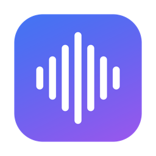

ถอดเสียงเป็นข้อความบน Mac ของคุณ — ฟรี เร็ว และเป็นส่วนตัว 100%
ลากไฟล์เสียง วิดีโอ หรือวางลิงก์ YouTube แล้วรับข้อความพร้อมเวลากำกับในไม่กี่นาที แปลต่อได้อีก 38 ภาษา ทุกอย่างประมวลผลในเครื่องคุณเอง ไม่ส่งข้อมูลขึ้นคลาวด์แม้แต่ไบต์เดียว
ไฟล์เล็กแค่ 2.8MB • โมเดล AI (~630MB) ดาวน์โหลดอัตโนมัติครั้งแรกที่เปิด
⚠️ เปิดครั้งแรก macOS จะขึ้นคำเตือนความปลอดภัย — ดูวิธีผ่านใน 3 ขั้นตอน (ทำครั้งเดียว)
ไม่ต้องสมัครสมาชิก ไม่ต้องตั้งค่าอะไรซับซ้อน
ไฟล์เสียง/วิดีโอจากเครื่อง หรือลิงก์ YouTube ก็ได้ ใส่ทีละหลายไฟล์ได้เลย
ถอดเร็วกว่าความยาวเสียง 5–10 เท่า เสียงประชุม 1 ชั่วโมงเสร็จในราว 10 นาที
ได้ข้อความพร้อมเวลา บันทึกเป็น .txt / .srt หรือกดแปลเป็นภาษาที่ต้องการ
ทุกอย่างที่งานถอดเสียงต้องการ
mp3, wav, m4a, flac, aiff รวมถึงวิดีโอ mp4, mov — แอปแยกเสียงจากวิดีโอให้เอง
ไม่ต้องโหลดวิดีโอเอง แอปดึงเฉพาะเสียงมาให้ พร้อมชื่อวิดีโอจริง ประหยัดทั้งเน็ตและเวลา
เสียงภาษาไหนได้ข้อความภาษานั้น ตรวจจับเองไม่ต้องตั้งค่า รองรับไทยปนอังกฤษได้ดีเยี่ยม
แปลผลลัพธ์เป็นไทย อังกฤษ ญี่ปุ่น จีน ฯลฯ ดูสองภาษาคู่กัน แล้วบันทึกเป็นซับคู่ได้ทันที
เสียงและข้อความไม่ออกจากเครื่องคุณเลย เหมาะกับประชุมภายใน ข้อมูลลูกค้า และเนื้อหาลับ
ใช้ Neural Engine ของชิป Apple Silicon โดยตรง กินแรมน้อย พัดลมไม่ดัง แบตไม่ไหล
ปุ่มเดียวส่งข้อความเข้า NotebookLM, ChatGPT, Gemini หรือ Claude เพื่อสรุปประชุม ทำรายงาน หรือถามต่อ
คัดลอกทั้งหมด บันทึกเป็น .txt หรือ .srt สำหรับทำซับวิดีโอ เลือกส่งออกต้นฉบับ คำแปล หรือสองภาษา
เปลี่ยนงานที่เคยใช้เวลาเป็นชั่วโมง ให้เหลือไม่กี่นาที
ไม่ต้องนั่งฟังแล้วพิมพ์ตามอีกต่อไป — ประชุม สัมภาษณ์ เลกเชอร์ พ็อดแคสต์ กลายเป็นข้อความให้ค้นหาและสรุปต่อได้ทันที
บริการถอดเสียงออนไลน์คิดเป็นรายเดือนหรือรายนาที Voice2Text ฟรีตลอดชีพ ใช้กี่ชั่วโมงก็ไม่เสียเพิ่ม
เนื้อหาการประชุมภายในองค์กรไม่ควรอยู่บนเซิร์ฟเวอร์ใคร — ที่นี่ทุกอย่างอยู่ในเครื่องคุณ ปิดเน็ตก็ยังทำงานได้
ไฟล์ .srt พร้อมเวลาแม่นยำ ใช้กับ Premiere, CapCut, YouTube ได้เลย แถมทำซับสองภาษาสำหรับคอนเทนต์ต่างประเทศ
ใช้เวลาไม่ถึง 2 นาที
กดปุ่มดาวน์โหลดด้านบน แล้วดับเบิลคลิกไฟล์ Voice2Text-1.3.4.dmg จะมีหน้าต่างเด้งขึ้นมา
ในหน้าต่างนั้น ลากไอคอน Voice2Text ไปวางบนโฟลเดอร์ Applications ที่อยู่ข้าง ๆ เสร็จแล้วดันแผ่น dmg ออกได้เลย (Eject)
ดับเบิลคลิกเปิดแอป จะเจอคำเตือน "Voice2Text" Not Opened — เป็นเรื่องปกติ ทำตาม 3 ขั้นตอนในกล่องสีเหลืองด้านล่างนี้ (ทำครั้งเดียวจบ)
ครั้งแรกแอปจะดาวน์โหลดโมเดล AI (~630MB) อัตโนมัติ ใช้เวลาไม่กี่นาที หลังจากนั้นทำงานออฟไลน์ได้ตลอด
macOS เตือนแบบนี้กับทุกแอปที่แจกฟรีนอก App Store โดยผู้พัฒนาไม่ได้จ่ายค่าจดทะเบียน Apple Developer (ปีละ $99) — ไม่ได้แปลว่าแอปอันตราย Voice2Text ทำงานออฟไลน์ทั้งหมดและไม่ส่งข้อมูลใด ๆ ออกจากเครื่องคุณ
🖥️ ทางลัดสำหรับสาย Terminal: รันคำสั่ง xattr -cr /Applications/Voice2Text.app แล้วเปิดแอปได้ทันที
เพราะแอปแจกฟรีนอก App Store และผู้พัฒนาไม่ได้จ่ายค่าจดทะเบียน Apple Developer (ปีละ $99) macOS จึงเตือนกับแอปลักษณะนี้ทุกตัวเป็นมาตรฐาน ไม่ได้ตรวจพบอะไรอันตรายในตัวแอป — ดูวิธีเปิดใน 3 ขั้นตอนที่นี่ ทำครั้งเดียว หลังจากนั้นเปิดได้ปกติตลอด
ฟรี 100% ไม่มีโฆษณา ไม่มีสมัครสมาชิก ไม่เก็บข้อมูลผู้ใช้ เพราะทุกอย่างทำงานในเครื่องคุณเอง เราไม่มีเซิร์ฟเวอร์ที่ต้องจ่ายค่าดูแล
ต่อเน็ตเฉพาะ 2 กรณี: ครั้งแรกที่เปิดแอป (ดาวน์โหลดโมเดล ~630MB ครั้งเดียว) และตอนถอดเสียงจากลิงก์ YouTube หลังจากนั้นไฟล์ในเครื่องถอดแบบออฟไลน์ได้เลย
ถอดเสียงได้เกือบ 100 ภาษา (เทคโนโลยี Whisper ของ OpenAI) ตรวจจับภาษาอัตโนมัติ รวมถึงเสียงไทยปนอังกฤษ ส่วนการแปลรองรับ 38 ภาษาผ่านระบบแปลของ Apple
ใช้โมเดล Whisper large-v3 turbo ระดับเดียวกับบริการถอดเสียงคลาวด์ชั้นนำ ความแม่นขึ้นกับคุณภาพเสียง — เสียงพูดชัดในห้องเงียบแม่นเกิน 95% ส่วนเสียงประชุมที่พูดซ้อนกันอาจมีพลาดบ้างเป็นปกติ
Mac ชิป Apple Silicon (M1 ขึ้นไป) ที่ใช้ macOS 15 Sequoia ขึ้นไป — แอปใช้ Neural Engine ของชิปโดยตรงจึงไม่รองรับ Mac รุ่น Intel
ไม่เลย ไฟล์เสียง ข้อความที่ถอดได้ และคำแปล อยู่ในเครื่องคุณทั้งหมด แอปไม่มีระบบเก็บสถิติหรือส่งข้อมูลใด ๆ ออกไป ถอดเสร็จจะลบไฟล์ชั่วคราวให้อัตโนมัติ
ดาวน์โหลดฟรี ติดตั้งใน 2 นาที
⬇️ ดาวน์โหลด Voice2Text สำหรับ macOS (.dmg)v1.3.4 • 2.8MB • macOS 15+ • Apple Silicon